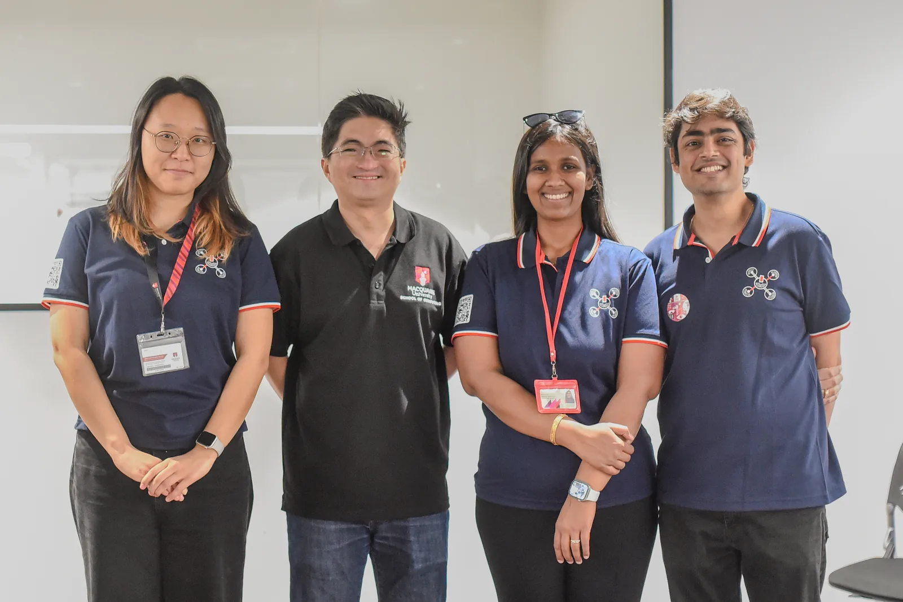
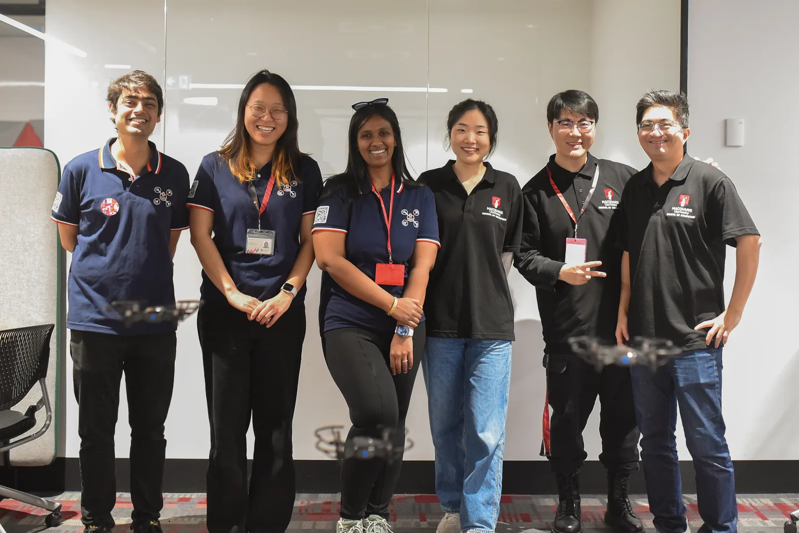
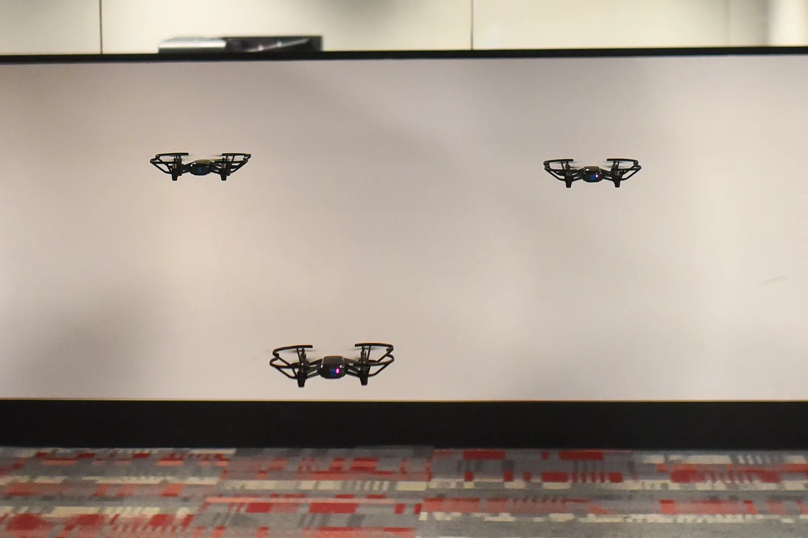
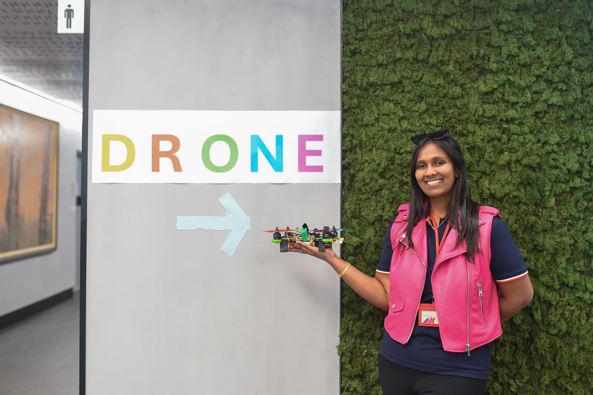
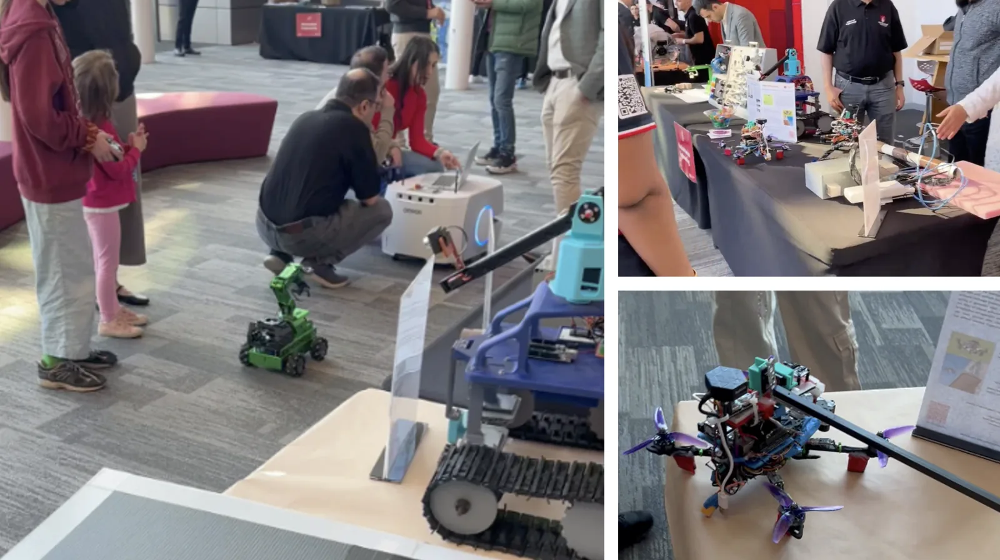

<!----------------------------------------------------------------
------------------------ Research Section -----------------------
----------------------------------------------------------------->
<section id="research" class="research">
  <div class="container">

    <div class="section-title">
      <h2></h2>
      <p>MQ Open Day 2024</p>
    </div>

<hr>            
<h4> MQ Open Day 2024</h4>
<hr>


<div class="whole-wrap">
        <div class="container">
          <div class="section-top-border">
            <!-- <div class="research-item pb-0"> -->
              <div class="row">
                

<ol>
  <p>
  The MQ Drone Lab at the Macquarie University Annual Open Day!
  We did our first mini indoor Drone show with 4 drones simultaneously in a swarm network at the Macquarie School of Computing.
  We also showcased our cooperative multirotor payload lift at the School of Engineering.

  </p>
  

  #MacquarieUni #OpenDay2024 #MQDroneLab #DroneShow #Swarm #Grateful
  
  </p>
    <br>
    
    
    
    
    
  </b>  
</ol>
</div></div></div></div>

 
    </section><!-- End Services Section -->

  
